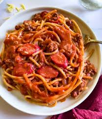

Cook Book
Garlic Fried Chicken


Description:
Garlic Fried Chicken is a flavorful dish that combines the savory richness of fried chicken with the aromatic taste of garlic.
Ingredients:
- 1 kg Raw Chicken
- 6-8 cloves Garlic, Chopped fine
- 360mL Milk
- 2 tsp Coarse Salt
- 1/4 tsp White Pepper
- 30mL Lemon Juice
120g Flour
1 Liter Oil
Instruction:
- Cut the chickens
- Combine garlic,milk,salt,white pepper, and lemon juice and add the chicken
- Marinate for 48 hours
- Place flour on a Plate or Samall Pan
- Remove Chicken from the Marinate and drege them well with flour, coat them completely
- Pour oil in the iron pan, Moderate heat
- Put the chicken in the hot pan, 20-40 Minutes Cooking Time
- Remove the chicken from the pan and drain well
Burger

Description:
A burger is a popular and versatile sandwich typically consisting of a grilled or pan-fried patty, often made from ground beef
Ingredients:
- 125g Hamburger Patty
- 1 Hamburger Bun
- 1 Lettuce Leaf
- 1 Slice Onion
1 Tomato Slice
Instruction:
- Cook Burger Patty in Grill
- While the Burger Patty is cooking, add mayonaise in Bun
- Add letuce leaf, Tomato Slice and Onion Slice in the Bun
- When the Hamburger patty is cooked, place it on the Bun and serve
Pizza
Description:
Pizza is a widely loved, versatile dish that originated in Italy and has become a global favorite. It consists of a flat, round base of dough topped with various ingredients.
Ingredients:
- 360g Pizza Sauce
- 360g Pizza Dough
- 1 tbsp Parmesan Cheese
Instruction:
- Flat the Pizza dough and make it into circle
- Add the Pizza sauce
- Add the Parmesan cheese
- Add it to the Oven cooked (260c) Until the dough is brown and the cheese meleted
- After Cooking it remove from the oven and serve.
Ice Cream

Description:
Ice cream is a beloved frozen dessert known for its creamy texture and sweet, refreshing taste. It is made by blending milk, cream, sugar, and flavorings.
Ingredients:
- 2 cups milk
- 1 cup heavy whipping cream
- 1 cup white sugar
- 2 tps vanilla extract
Instruction:
- Stir milk, cream, and sugar in a saucepan over low heat until sugar has dissolved.
- Transfer cream mixture to a container such as a large measuring cup. Stir in vanilla extract and chill mix thoroughly, at least 2 hours
- Pour cold ice cream mix into it. 20 to 25 minutes
- When ice cream is softly frozen, serve immediately
Lumpia
Description:
Lumpia is a type of Filipino spring roll, popular both as an appetizer and a snack. It's known for its crispy, golden-brown exterior and savory filling.
Ingredients:
- 1 (12 ounce) package lumpia wrappers
- 1 half kg ground beef
- 1 half kg pork
- 1 cup finely chopped onion
- 1 cup finely chopped green bell pepper
- 1 cup finely chopped carrot
- 1 litter oil
Instruction:
- In a medium bowl, blend together the ground beef and pork, onion, green pepper and carrot.
- Place about 2 tablespoons of the meat mixture along the center of the wrapper
- Fold one edge of the wrapper over to the other. Fold the outer edges in slightly, then continue to roll into a cylinder. Wet your finger, and moisten the edge to seal.
- Heat oil in pan,medium high heat until oil (170 to 175 degrees C) Fry 3-4 lumpia at a time. It should only take about 2-3 minutes for each side.
- Serve it when its ready
Burger Seak
Description:
Burger Steak is a Filipino comfort dish consisting of juicy, seasoned beef patties smothered in a savory mushroom gravy.
Ingredients:
- 1 kg ground beef
- 3 tbsp soy sauce
- 4 tbsp chopped onion
- 1 half tsp pepper
- Ready Made Mushroom Sauce
Instruction:
- Combine burger patty ingredients in a bowl.
- Get at least 1/4 cup of the mixture, roll into a ball then flatten using your palm.
- Pan fry the shaped mixture
- Drain on paper towel to remove excess oil.
- Add the Ready Made Mushroom sauce, Served when its ready
PancitCanton
Description:
The Pancit Canton is very chewy and flavorful
Ingredients:
- 1 Pancit Canton Noodles
- 1 cup Hot Water
- Spices
Instruction:
- Add Hot water in Pan
- Add Pancit Canton in Hot Water
- Wait 3 mins
- After cooking the noodles, Mix Noodles with the Spices,
Filipino spaghetti

Description:
Filipino Spaghetti is a sweet, savory, and uniquely Filipino version of the traditional Italian pasta dish.
Ingredients:
- 2 tbsp Vegetable Oil
- 4 cloves Garlic
- 1 Onion
- 250 grams Ground Pork
- 200 grams Tomato Sauce
- 1 cup Banana Ketchup
- 1 cup Water
- 100 grams sugar
- 500 grams Pasta
- 1 Grated Cheese
Instruction:
- Sauté garlic,onion and ground pork in oil.
- Add tomato sauce,Ketchup and hotdog.Pour water and simmer. and brown sugar. Set aside.
- Boil pasta according to package direction.
- Strain spaghetti and toss in the sauce.Transfer on a serving plate, top with cheese and serve
Pork Sisig
Description:
Sisig is a traditional Filipino dish known for its bold flavors, crispy and chewy textures, and sizzling presentation.
Ingredients:
- 1 Big red onion, Finely chopped
- 1 kg Pork belly
- 3 pieces chicken liver
- 3-4 kalamansi juice
- 1-2 chili peppers - minced
- 1 cup Soy Sauce
Instruction:
- Chopped the pork belly and add chicken liver and fry
- Then mix the cooked porkbelly and all other ingridents
- Then Serve
Kinilaw na Tuna

Description:
Kinilaw na Tuna is a classic Filipino dish similar to ceviche, featuring raw tuna marinated in vinegar and citrus juice
Ingredients:
- 1 Big red onion, Finely chopped
- 1 kg Tuna
- 3-4 kalamansi juice
- 1-2 chili peppers-minced
- 1 cup Vinegar
Instruction:
- Chopped the tuna and add Vinegar
- Then mix the Tuna and all other ingridents
- Then Serve